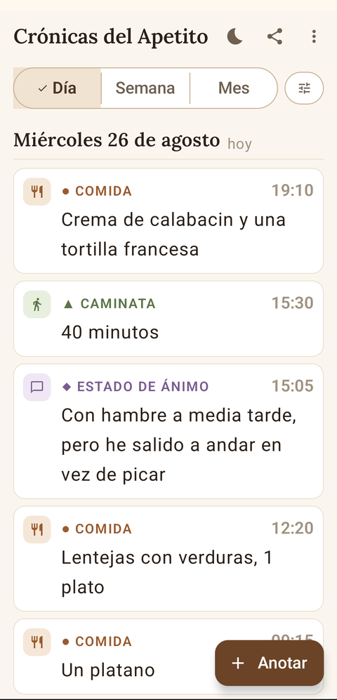
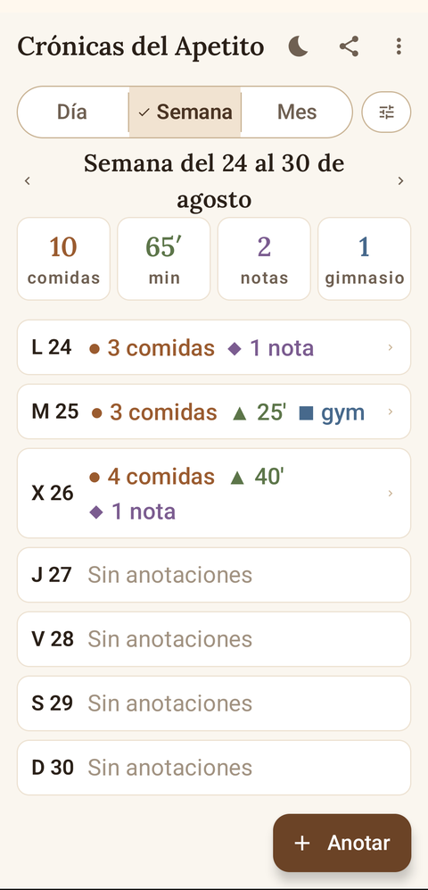
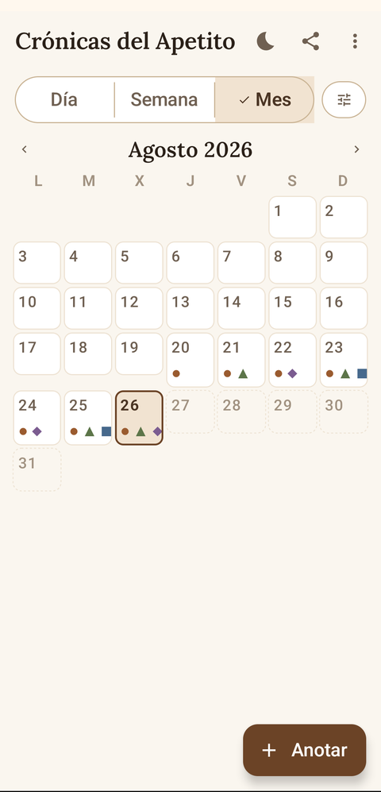
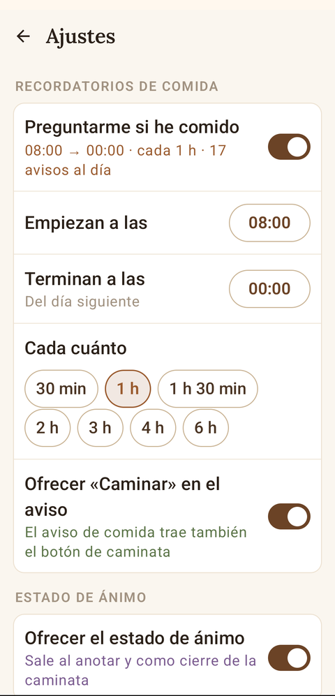

Anota lo que comes sin tener que acordarte: la app te pregunta,
a la hora y con la frecuencia que tú le digas.

Tu día, en orden

La semana de un vistazo

El mes entero

A tu horario
Qué hace
Te pregunta, no te examina. Un aviso suave para anotar qué has comido, entre las horas que elijas y cada cuánto quieras. Si un día te sobra, lo espacias o lo apagas.
Anotas en un toque, desde la propia notificación, con foto del plato si te apetece.
Míralo por día, semana o mes, con filtro por fechas.
Comparte lo que estás viendo como imagen o PDF, listo para mandarlo por mensaje o imprimirlo.
Tus datos son tuyos. Se guardan solo en tu móvil, y puedes sacar una copia de todo —historial y fotos— cuando quieras.
Cuatro cosas, y solo las que quieras
●Comida — qué y cuánto, con foto opcional
▲Caminatas — los minutos que andas
◆Estado de ánimo — cómo te sientes, cuando te apetezca
■Gimnasio — si has ido, y cuántas veces por semana
Cada uno se enciende o se apaga por separado. Y cada tipo lleva su símbolo además
de su color, para que se distinga también impreso en blanco y negro.
Android 8 o superior · español e inglés · gratis y sin anuncios.
La app se actualiza sola desde aquí.
Cómo instalar
Descarga el .apk desde el botón de arriba.
Ábrelo en el móvil y acepta instalar de orígenes desconocidos si lo pide.
La primera vez te preguntará qué quieres llevar y a qué horas: en tres pasos la dejas a tu medida.
Concede el permiso de notificaciones, o tendrás que acordarte tú.
Sin cuentas, sin nube, sin anuncios
No hay registro ni servidor: lo que anotas no sale de tu móvil, y por eso mismo
la app trae su propia copia de seguridad en Ajustes. Nadie mira lo que comes.